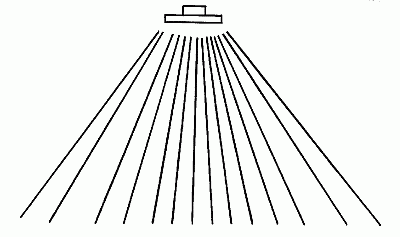
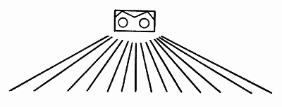
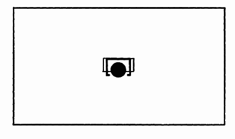

Газовые инфракрасные излучатели.

В настоящее время для отопления крупных площадей используется три вида газовых излучателей:
1. Светлые газовые излучатели.
2. Темные газовые излучатели.
3. Сверхтемные (компактные) газовые излучатели.
Газовые излучатели сжигают газ для обогрева специальной излучающей поверхности, которая согревается прямым контактом со сжигаемыми газами.
Светлые газовые излучателиИсточник излучения – пористая керамическая пластина, которая нагревается беспламенным поверхностным сжиганием газа до температуры 800–1000° С. При этой температуре образуется электромагнитное излучение с длиной волны от 2,1.10–6 до 3,0.10–6 м. Волна этой длины распространяется практически прямолинейно и почти без потерь проходит через воздух.
Лучистая эффективность светлых газовых излучателей составляет от 50 до 75%.
Для повышения эффективности излучателей некоторые изготовители размещают перед лучистой керамической поверхностью дефлексную решетку, которая возвращает часть эмитированных энергетических частиц назад на активную поверхность, что приводит к возбуждению частиц атомов и к последующему увеличению эмиссии фотонов излучения.
У светлых излучателей доминирует корпускулярное излучение, которое определяет их свойства. Угол ядра излучения обычно равняется 60°, и область излучения на поверхности относительно четко ограничена (рис. 22). Иногда излучатели этого типа, благодаря этому свойству, обозначаются как «теплометы». Они достигают высокой интенсивности излучения.

Рис. 22. Интенсивность излучения светлых излучателей
Так как корпускулярный характер и высокая интенсивность способствуют проникновению излучения под поверхность предметов, изготовленных из непроводящих материалов, они довольно быстро нагреваются. Это присходит потому, что 1 дм излучающей площади способен передать мощность приблизительно до 1200 Вт.
Сами излучатели имеют небольшие размеры. Горелки обычно работают по принципу атмосферных инжекторных горелок, в которых необходимый для сжигания воздух смешивают с газом с помощью инжекторов. Смешанный с газом воздух поступает через капиллярные отверстия в керамической пластине, зажигается и горит на ее поверхности. Продукты сжигания поступают в помещение.
Раньше эти излучатели использовались в основном для технологического обогрева – сушки бумаги на целлюлозных комбинатах, для размораживания вагонов и т. д. В дальнейшем их стали использовать для обогрева и отопления промышленных объектов.
Область использования светлых излучателейХотя все излучатели могут использоваться для отопления промышленных помещений, область их применения четко ограничена: они не пригодны для отопления тех помещений, где постоянно находится человек.
Высокая интенсивность и относительно острый угол излучения приводят при отоплении по всей площади к неравномерному распределению плотности излучения на полу, очень часто наблюдается возникновение довольно больших необлучаемых площадей, которые в сумме могут составлять значительный процент площади помещения.
Это приводит к тому, что в полу не аккумулируется достаточного количества энергии для равномерного обогрева воздуха в помещении, что в результате приводит к большой разнице между ощущаемой температурой и температурой воздуха.
Таким образом, в отапливаемом помещении человек не чувствует себя комфортно, так как в зоне высокой плотности излучения может наступать нагрев темени головы до температуры больше чем 25° С, что является максимально допустимой границей гигиенической нормы, а вне этой зоны, где уже не чувствуется влияние излучения, человек ощущает некомфортно низкую температуру воздуха. К сожалению, устроенное таким образом отопление встречается довольно часто.
Неправильно спроектированная и реализованная система часто приводит в будущем к отказу от любого лучистого отопления. Но и теоретически правильное проектирование отопления светлыми излучателями по всей площади, хотя и дороже чем иной проект, не гарантирует теплового комфорта. Основанием является длина волны и корпускулярный характер излучателя.
Области, в которых светлый излучатель удовлетворяет своему функциональному назначению и самым эффективным способам обогрева, мы приводим ниже:
– локальное отопление рабочих мест в пространстве, которое не отапливается;
– различные виды складов, погрузочных рамп и других пространств, где невозможно получить повышенную температуру воздуха или из-за его чрезмерного обмена или из-за низких теплоизоляционных свойств объектов;
– обогрев частей внешнего пространства, например трибун стадионов, рынков и т. д.
Все эти пространства с точки зрения теплового комфорта При этом должны соблюдаться следующие условия: человек в отапливаемом светлыми излучателями пространстве находится только ограниченное время, одежда на нем должна быть теплой, чтобы защищать его от холодного воздуха и действия корпускулярного излучения.
В настоящее время в связи с использованием конструктивных материалов с лучшими теплоизоляционными свойствами светлые излучатели теряют свою привлекательность с точки зрения эксплуатационных расходов на отопление. Причиной этого является техническая невозможность изолирования места сжигания, то есть тяжело обеспечить подачу воздуха для сжигания и отвод продуктов сжигания во внешнюю среду, в связи с чем повышается коэффициент обмена воздуха в пространстве(на 1 кВт мощности необходимо иметь 30 м2проветриваемого воздуха сверх того, который необходим для обеспечения работы людей и технологии), что означает потерю значительной части уже произведенного тепла.
Темные газовые излучателиПриведенные недостатки светлых излучающих систем были устранены в новых типах излучателей, предназначенных для отопления всей площади, – темных газовых излучателей. В данном излучателе смесь воздуха и газа сжигается в металлической закрытой трубе, которая обогревается самим пламенем и продуктами сгорания.
Увеличение размеров излучателя ведет к уменьшению его поверхностной температуры до 350–450° С. Излучатель имитирует излучение, максимум которого находится в области 4,1.10–6–8,1.10–6 м. Темный излучатель характеризуется более низкой лучистой эффективностью, которая колеблется в диапазоне 45–60%. Эта эффективность достигается с помощью так называемого рефлектора, который образует зеркальную плоскость, отражающую излучения в необходимом направлении. Волна распространяется не прямолинейно, а изгибается, поэтому требуется рефлектор специальной формы.
Кроме центрального излучения, которое распро-страняется примерно под углом 90°, имеется и боковое излучение с углом 120° (рис. 23).

Рис. 23. Интенсивность излучения темных инфракрасных излучателей
Темный газовый инфраизлучатель пригоден для отапливания объектов по всей площади.
Правильно подобранные системы отопления с использованием темных газовых излучателей более выгодны из-за равномерной интенсивности излучения, попадающего на пол.
Конструкция современных типов темных излучателей направлена на максимальную экономию первичного носителя, например природного газа, которая достигается следующими способами:
1. Использованием качественных материалов и технологий. Решающее влияние на лучистые свойства излучателя имеют материалы, применяемые при их изготовлении. У излучающих труб решающим фактором является их срок службы. Сегодня существуют технологии производства труб, которые гарантируют неизменность их свойств и длительности срока использования, равняющегося сроку использования всего устройства.
2. Использованием патентов и изобретений. Использование горелки внутри излучателя уменьшает влияние температурных шоков на материал излучающей трубы, повышает эффективность передачи тепла и качество сгорания.
3. Качественным управлением на базе микропроцессорной техники, которая способна удовлетворить требования заказчика и сделать более эффективной эксплуатацию лучистого отопления. Позволяет управлять иными субсистемами, связанными с общими микроклиматическими условиями в отапливаемом пространстве.
4. Исключительными техническими решениями, которые гарантируют долговременную эксплуатацию без неисправностей с гарантированными параметрами.
Следует сказать, что темный газовый излучатель с точки зрения вывода продуктов сгорания гораздо предпочтительнее. При условии выполнения требований гигиенических стандартов и при своевременном проветривании можно выводить продукты сгорания в помещение, осуществлять вывод продуктов сгорания во внешнюю среду, комбинированную подачу воздуха для сжигания и вывода продуктов сгорания или же центральный вывод продуктов сгорания. Конкретные решения проекта всегда соответствуют индивидуальным требованиям каждого конкретного дома.
Сверхтемный излучатель – специальный тип темного излучателя – имеет пониженную рабочую температуру до 150–200° С. Излучатель генерирует излучение с длиной волны более чем 14.10–6 м, которое уже невозможно рефлектором направить в когерентные пучки, и сам излучатель облучает всю поверхность пространства. При этом его лучистая мощность колеблется на уровне 40%. Поэтому сверхтемный излучатель имеет массивный изолированный рефлектор (рис. 24), задачей которого является защита его от больших конвективных потерь.

Рис. 24. Облучение поверхности сверхтемным излучателем
Лучистая энергия в значительной мере поглощается воздухом и водяным паром, что приводит к повышению температуры воздуха прямым излучением. Поэтому эти низкотемпературные излучатели используются в хорошо изолированных помещениях с малым обменом воздуха. Увеличение энергии за счет излучения у этих излучателей колеблется от 1 до 2° С (/\t).
Излучатели имеют обычно одну горелку и комбинированную подачу воздуха – отвод продуктов сгорания с помощью дымохода. В итоге можно констатировать, что каждый тип пространства требует особого отношения, и только после его анализа можно выбрать оптимальный способ отопления. Каждое шаблонное решение представляет собой угрозу неполучения ожидаемых результатов и может привести к отказу от лучистого отопления, как такового, без принятия во внимание его эффективности.
Одной только заменой паро– и тепловоздушной систем газовыми излучателями можно получить значительное увеличение эффективности отопления, где поддержание теплового комфорта является лишь ча-стью более широкого понятия – микроклиматических условий, которые включают качество воздуха, безопасность, а также выполнение всех остальных требований к пространству.
В последнее время в специальной литературе встречаются статьи, описывающие перспективы недалекого будущего. Предполагается, что широкое распространение получат бытовые потребители энергии с искусственным интеллектом.
Со многими из них мы встречаемся уже сегодня, например с автоматической стиральной машиной, которая сама просчитывает количество стираемого белья и после этого программирует потребление воды, количество стирального порошка и, в случае необходимости, изменяет программу стирки.
В качестве другого примера можно привести те компоненты автомобиля, которые самостоятельно ограничивают количество электрических соединений к одной шине коммуникации, чем уменьшают неполезный вес автомобиля до 70%.
Этих примеров достаточно для того чтобы определить, по каким направлениям будут развиваться технологии.
Приведенные выше примеры показывают, что дальнейшие резервы экономии тепловой энергии можно получить, только если учитываются все элементы, которые участвуют в отоплении и создании климатических условий и безопасности отапливаемого помещения.